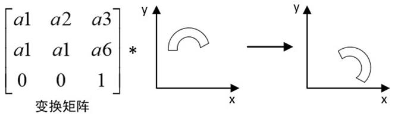
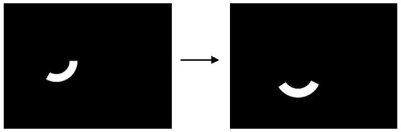

|
类型 |
变换 |
|
描述 |
对输入扇形ROI进行补正，通常扇形作为ROI参数结合定位偏移补正矩阵对ROI进行补正  别名：ZV_SectCorrect |
|
语法 |
ZV_TkCorrectSector(mat,cx,cy,r1,r2,stAngle,extAngle,tabId)
参数： mat：ZVOBJECT类型，补正的变换矩阵 cx：输入扇形中心x坐标 cy：输入扇形中心y坐标 r1：输入扇形内圆半径，大于0 r2：输入扇形外圆半径，大于0且r2 > r1 stAngle：输入扇形起始角度，单位度数 extAngle：输入扇形角度范围，单位度数，大于0 tabId：TABLE索引，输出参数，补正后的扇形,依次为cx,cy,r1,r2,stAngle,extAngle |
|
适用控制器 |
支持ZV功能或者5系列以上的控制器 |
|
例子 |
 ZVOBJECT img,mat,re ZV_ImgRead(img,"tool8.jpg",0) '读取图像 ZV_ImgSetConst(img,0)'常数填充图像
TABLE(0, 1, 0.5, -50, 0.5, 1, -50) '数据写入TABLE ZV_MatGenData(mat,2,3,0) '构建变换矩阵 ZV_TkCorrectSector(mat,200,220,50,80,0,120,10) '使用变换矩阵对扇形进行补正 ZV_ReGenSector(re,TABLE(10),TABLE(11),TABLE(12),TABLE(13),TABLE(14),TABLE(15))'生成扇形区域 ZV_DraRegion(img,re,0,255) '绘制扇形区域 |